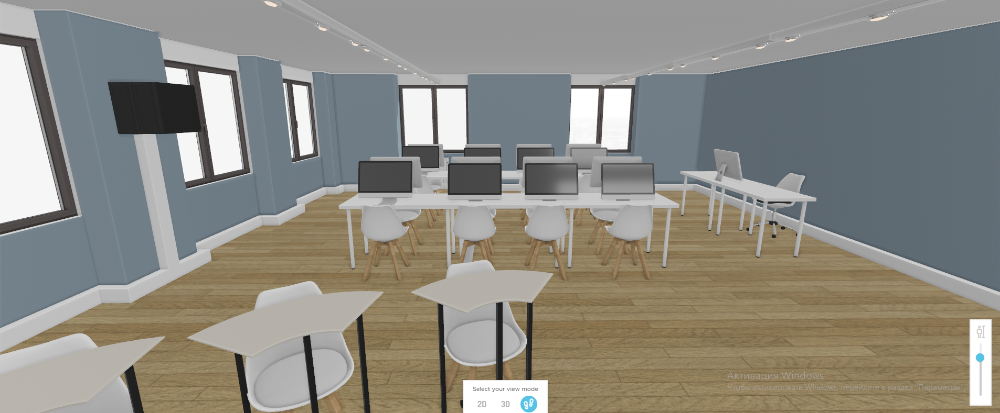
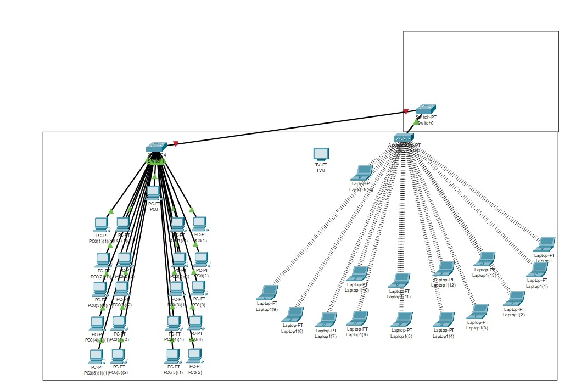

Tipi di Cavi Utilizzati
Nell'aula laboratorio, vengono utilizzati diversi tipi di cavi per garantire una connessione affidabile e veloce tra i dispositivi. I principali tipi di cavi utilizzati includono:
- Cavo Ethernet (Cat 5e, Cat 6): Utilizzato per connessioni cablate tra iMac e switch di rete.
- Cavo di alimentazione: Necessario per alimentare i dispositivi come iMac e router.
- Cavo HDMI: Utilizzato per collegare proiettori e schermi.
Diagramma dei Cavi

Simulazione Packet Tracer
Di seguito è possibile visualizzare uno screenshot della simulazione realizzata con Cisco Packet Tracer per rappresentare la configurazione della rete dell'aula:
